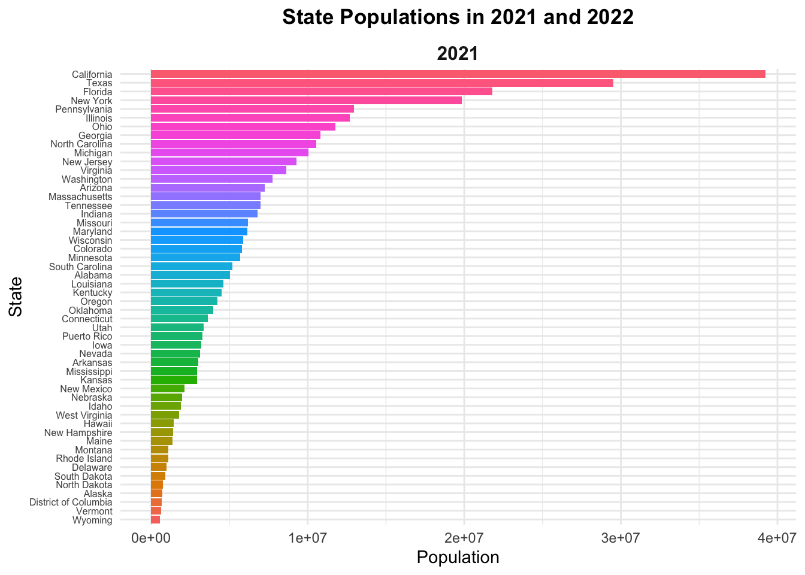
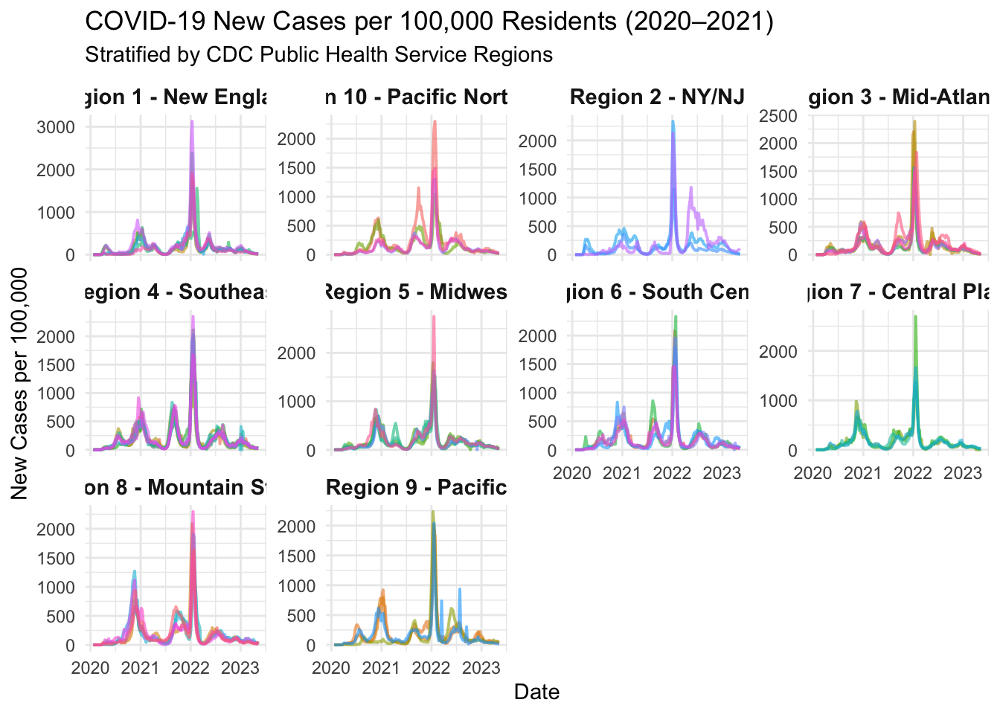
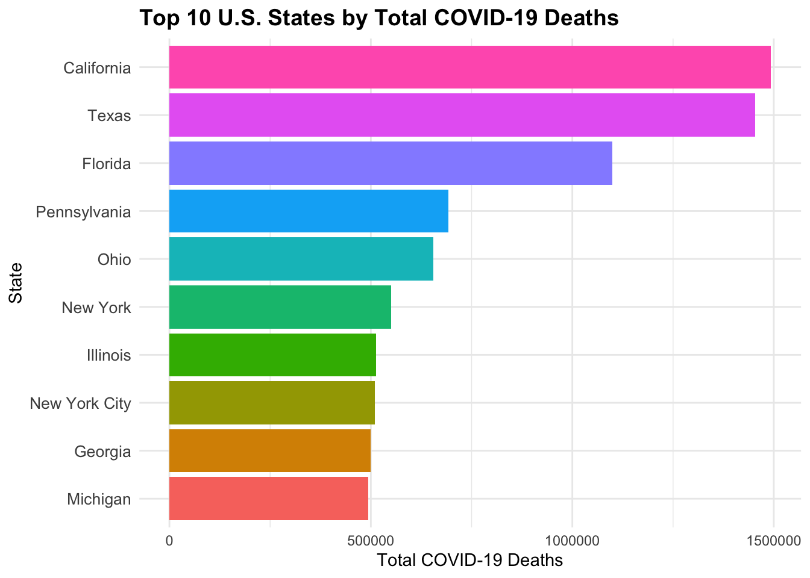

source("census-key.R")
# exists("census_key") # check - should return TRUEProblem Set 4 – API Data Wrangling
In the next problem set, we plan to explore the relationship between COVID-19 death rates and vaccination rates across US states by visually examining their correlation. This analysis will involve gathering COVID-19 related data from the CDC’s API and then extensively processing it to merge the various datasets. Since the population sizes of states vary significantly, we will focus on comparing rates rather than absolute numbers. To facilitate this, we will also source population data from the US Census to accurately calculate these rates.
In this problem set we will learn how to extract and wrangle data from the data US Census and CDC APIs. 1. Get an API key from the US Census at https://api.census.gov/data/key_signup.html. You can’t share this public key. But your code has to run on a TFs computer. Assume the TF will have a file in their working directory named census-key.R with the following one line of code:
census_key <- "A_CENSUS_KEY_THAT_WORKS"Write a first line of code for your problem set that defines census_key by running the code in the file census-key.R.
library(httr2)
library(tidyverse)
library(janitor)
library(jsonlite)
library(lubridate)
library(knitr)- The US Census API User Guide provides details on how to leverage this valuable resource. We are interested in vintage population estimates for years 2021 and 2022. From the documentation we find that the endpoint is:
url <- "https://api.census.gov/data/2021/pep/population"Use the httr2 package to construct the following GET request.
https://api.census.gov/data/2021/pep/population?get=POP_2020,POP_2021,NAME&for=state:*&key=YOURKEYHERECreate an object called request of class httr2_request with this URL as an endpoint. Hint: Print out request to check that the URL matches what we want.
library(httr2)
request <- request(url) |> # start the request
req_url_query( # add query parameters properly instead of pasting strings manually
get = "POP_2020,POP_2021,NAME",
`for` = "state:*",
key = census_key
)
# print(request) # check- Make a request to the US Census API using the
requestobject. Save the response to and object namedresponse. Check the response status of your request and make sure it was successful. You can learn about status codes here.
response <- req_perform(request)
resp_status(response) # check response status[1] 200- Use a function from the httr2 package to determine the content type of your response.
resp_content_type(response)[1] "application/json"- Use just one line of code and one function to extract the data into a matrix. Hints: 1) Use the
resp_body_jsonfunction. 2) The first row of the matrix will be the variable names and this OK as we will fix in the next exercise.
population <- resp_body_json(response) |> do.call(what = rbind) # chain operations with the pipe operator
# checks
#class(population)
#dim(population)
#head(population)- Examine the
populationmatrix you just created. Notice that 1) it is not tidy, 2) the column types are not what we want, and 3) the first row is a header. Convertpopulationto a tidy dataset. Remove the state ID column and change the name of the column with state names tostate_name. Add a column with state abbreviations calledstate. Make sure you assign the abbreviations for DC and PR correctly. Hint: Use the janitor package to make the first row the header.
population <- population |> ## Use janitor row to names function
row_to_names(row_number = 1) |> # make first row the header
as_tibble() |> # convert to tibble
select(-state) |> # remove state column
rename(state_name = NAME) |> # rename state column to state_name
pivot_longer( # use pivot_longer to tidy
cols = starts_with("POP_"),
names_to = "year",
values_to = "population"
) |>
mutate(
year = str_remove(year, "POP_"), # remove POP_ from year
year = as.numeric(year),
population = as.numeric(population), # parse all relevant columns to numeric
state = case_when( # add state abbreviations using state.abb variable
state_name %in% state.name ~ state.abb[match(state_name, state.name)],
state_name == "District of Columbia" ~ "DC", # use case_when to add abbreviations for DC and PR
state_name == "Puerto Rico" ~ "PR",
TRUE ~ NA_character_
)
)- As a check, make a barplot of states’ 2021 and 2022 populations. Show the state names in the y-axis ordered by population size. Hint: You will need to use
reorderand usefacet_wrap.
population |>
mutate(state_name = as.character(state_name)) |> # ensure state_name is character
filter(year %in% c(2021, 2022)) |> # keep only 2021 and 2022
group_by(year) |> # reorder within each year
mutate(state_name = reorder(state_name, population)) |>
ungroup() |>
ggplot(aes(x = state_name, y = population, fill = state_name)) + # assign aesthetic mapping
geom_col(show.legend = FALSE) + # use geom_col to plot barplot
coord_flip() + # flip coordinates
facet_wrap(~ year, ncol = 1, scales = "free_x") + # stack vertically
labs(
title = "State Populations in 2021 and 2022",
x = "State",
y = "Population"
) +
theme_minimal() +
theme(
strip.text = element_text(size = 12, face = "bold"),
axis.text.y = element_text(size = 6),
axis.title = element_text(size = 11),
plot.title = element_text(hjust = 0.5, face = "bold")
)
- The following URL:
url <- "https://github.com/datasciencelabs/2025/raw/refs/heads/main/data/regions.json"
# check
# regions_raw <- fromJSON(url)
# str(regions_raw, max.level = 2)points to a JSON file that lists the states in the 10 Public Health Service (PHS) defined by CDC. We want to add these regions to the population dataset. To facilitate this create a data frame called regions that has two columns state_name, region, region_name. One of the regions has a long name. Change it to something shorter.
regions_raw <- fromJSON(url) # use jsonlit JSON parser
regions <- regions_raw |>
mutate(
region = unlist(region), # convert region list to numeric
region_name = case_when( # shorten one long region name
region_name == "New York and New Jersey, Puerto Rico, Virgin Islands" ~ "Region 2 - NY/NJ",
TRUE ~ paste0("Region ", region, " - ", region_name)
)
) |>
unnest_longer(states) |> # convert list of states to rows
rename(state_name = states) |> # rename for consistency
select(state_name, region, region_name) # keep only required columns- Add a region and region name columns to the
populationdata frame.
population <- population |>
mutate(state_name = as.character(state_name)) |> # flatten list column
left_join(regions, by = "state_name") |> # merge region info by state_name
relocate(region, region_name, .after = state) - From reading https://data.cdc.gov/ we learn the endpoint
https://data.cdc.gov/resource/pwn4-m3yp.jsonprovides state level data from SARS-COV2 cases. Use the httr2 tools you have learned to download this into a data frame. Is all the data there? If not, comment on why.
api <- "https://data.cdc.gov/resource/pwn4-m3yp.json"
cases_raw <- request(api) |> # create request to CDC API
req_perform() |> # perform the request
resp_body_json(simplifyVector = TRUE) |> # parse JSON content into R data frame
as_tibble() # convert to tibble for easier viewing
cases_raw |> glimpse()Rows: 1,000
Columns: 10
$ date_updated <chr> "2023-02-23T00:00:00.000", "2022-12-22T00:00:00.00…
$ state <chr> "AZ", "LA", "GA", "LA", "LA", "LA", "LA", "NV", "F…
$ start_date <chr> "2023-02-16T00:00:00.000", "2022-12-15T00:00:00.00…
$ end_date <chr> "2023-02-22T00:00:00.000", "2022-12-21T00:00:00.00…
$ tot_cases <chr> "2434631.0", "1507707.0", "3061141.0", "1588259.0"…
$ new_cases <chr> "3716.0", "4041.0", "5298.0", "2203.0", "5725.0", …
$ tot_deaths <chr> "33042.0", "18345.0", "42324.0", "18858.0", "18572…
$ new_deaths <chr> "39.0", "21.0", "88.0", "23.0", "47.0", "35.0", "2…
$ new_historic_cases <chr> "23150", "21397", "6800", "5347", "4507", "2239", …
$ new_historic_deaths <chr> "0", "0", "0", "0", "0", "0", "0", "0", "1109", "5…We see exactly 1,000 rows. We should be seeing over \(52 \times 3\) rows per state.
Explanation: As described above, we only see 1,000 rows here. This means that the data is not complete. The CDC API defaults to returning only 1,000 rows per request unless a limit parameter is explicitly specified. To access the full dataset, we’ll need to modify the query in Problem 11 to increase the limit value.
- The reason you see exactly 1,000 rows is because CDC has a default limit. You can change this limit by adding
$limit=10000000000to the request. Rewrite the previous request to ensure that you receive all the data. Then wrangle the resulting data frame to produce a data frame with columnsstate,date(should be the end date) andcases. Make sure the cases are numeric and the dates are inDateISO-8601 format.
api <- "https://data.cdc.gov/resource/pwn4-m3yp.json?$limit=10000000000" # remove 1,000-row cap
cases_raw <- request(api) |> # create request to CDC API
req_perform() |> # perform the request
resp_body_json(simplifyVector = TRUE) |> # parse JSON content into R data frame
as_tibble() |> # convert to tibble
select(state, date = end_date, cases = new_cases) |> # keep relevant columns
mutate(
date = as_date(date), # convert to ISO-8601 Date
cases = as.numeric(cases) # ensure numeric
)
cases_raw |> glimpse()Rows: 10,380
Columns: 3
$ state <chr> "AZ", "LA", "GA", "LA", "LA", "LA", "LA", "NV", "FL", "NYC", "KS…
$ date <date> 2023-02-22, 2022-12-21, 2023-02-22, 2023-03-29, 2023-02-01, 202…
$ cases <dbl> 3716, 4041, 5298, 2203, 5725, 1961, 1884, 1233, 6937, 14590, 259…As shown above, we can see 10,380 rows now, overcoming the 1,000 limit.
- For 2020 and 2021, make a time series plot of cases per 100,000 versus time for each state. Stratify the plot by region name. Make sure to label you graph appropriately.
population_2021 <- population |>
filter(year == 2021) |>
select(state, population, region_name)
cases <- cases_raw |>
left_join(population_2021, by = "state") |>
mutate(
cases_per_100k = (cases / population) * 100000
) |>
filter(!is.na(cases_per_100k), is.finite(cases_per_100k)) # clean missing values
cases |>
ggplot(aes(x = date, y = cases_per_100k, color = state)) +
geom_line(alpha = 0.6, linewidth = 0.7) +
facet_wrap(~ region_name, scales = "free_y") +
labs(
title = "COVID-19 New Cases per 100,000 Residents (2020–2021)",
subtitle = "Stratified by CDC Public Health Service Regions",
x = "Date",
y = "New Cases per 100,000",
color = "State"
) +
theme_minimal() +
theme(
legend.position = "none",
strip.text = element_text(face = "bold", size = 11)
)
- The dates in the
casesdataset are stored as character strings. Use the lubridate package to properly parse thedatecolumn, then create a summary table showing the total COVID-19 cases by month and year for 2020 and 2021. The table should have columns for year, month (as month name), and total cases across all states. Order by year and month. Use the knitr package andkable()function to display the results as a formatted table.
cases |>
mutate(
year = year(date), # extract year from date
month = month(date, label = TRUE, abbr = FALSE) # get month name
) |>
filter(year %in% c(2020, 2021)) |> # keep only 2020–2021
group_by(year, month) |> # group by year and month
summarize(total_cases = sum(cases, na.rm = TRUE), .groups = "drop") |>
arrange(year, month) |> # order chronologically
kable(
caption = "Total COVID-19 New Cases by Month and Year (2020–2021)",
digits = 0,
align = c("c", "c", "r")
)| year | month | total_cases |
|---|---|---|
| 2020 | January | 11 |
| 2020 | February | 68 |
| 2020 | March | 50335 |
| 2020 | April | 822648 |
| 2020 | May | 616691 |
| 2020 | June | 642552 |
| 2020 | July | 1977016 |
| 2020 | August | 1452393 |
| 2020 | September | 1401917 |
| 2020 | October | 1608932 |
| 2020 | November | 3887222 |
| 2020 | December | 6907540 |
| 2021 | January | 5649115 |
| 2021 | February | 2543964 |
| 2021 | March | 1928749 |
| 2021 | April | 1694189 |
| 2021 | May | 948953 |
| 2021 | June | 484817 |
| 2021 | July | 1120939 |
| 2021 | August | 3519407 |
| 2021 | September | 4960807 |
| 2021 | October | 2317854 |
| 2021 | November | 2289118 |
| 2021 | December | 5293391 |
- The following URL provides additional COVID-19 data from the CDC in JSON format:
deaths_url <- "https://data.cdc.gov/resource/9bhg-hcku.json"Use httr2 to download COVID-19 death data from this endpoint. Make sure to remove the default limit to get all available data. Create a clean dataset called deaths with columns state, date, and deaths (renamed from the original column name). Ensure dates are in proper Date format and deaths are numeric.
deaths_url <- "https://data.cdc.gov/resource/9bhg-hcku.json?$limit=10000000000" # remove 1,000-row cap
deaths <- request(deaths_url) |> # create request to CDC API
req_perform() |> # perform the request
resp_body_json(simplifyVector = TRUE) |> # parse JSON content
as_tibble() |> # convert to tibble
select(state, date = end_date, deaths = covid_19_deaths) |> # keep & rename cols
mutate(
date = as_date(date), # convert to ISO-8601 Date
deaths = as.numeric(deaths) # ensure numeric type
)
deaths |> glimpse()Rows: 137,700
Columns: 3
$ state <chr> "United States", "United States", "United States", "United Stat…
$ date <date> 2023-09-23, 2023-09-23, 2023-09-23, 2023-09-23, 2023-09-23, 20…
$ deaths <dbl> 1146774, 519, 1696, 285, 509, 3021, 7030, 12401, 19886, 30108, …- Using the
deathsdataset you created, make a bar plot showing the total COVID-19 deaths by state. Show only the top 10 states with the highest death counts. Order the bars from highest to lowest and use appropriate labels and title.
deaths |>
filter(!is.na(state) & state != "United States") |> # keep only actual states
group_by(state) |> # group by state
summarize(total_deaths = sum(deaths, na.rm = TRUE), .groups = "drop") |>
arrange(desc(total_deaths)) |> # order descending
slice_head(n = 10) |> # keep top 10 states
mutate(state = fct_reorder(state, total_deaths)) |> # reorder bars
ggplot(aes(x = state, y = total_deaths, fill = state)) +
geom_col(show.legend = FALSE) + # bar plot
coord_flip() + # flip for readability
labs(
title = "Top 10 U.S. States by Total COVID-19 Deaths",
x = "State",
y = "Total COVID-19 Deaths"
) +
theme_minimal() +
theme(
plot.title = element_text(face = "bold", size = 14),
axis.text.y = element_text(size = 10)
)